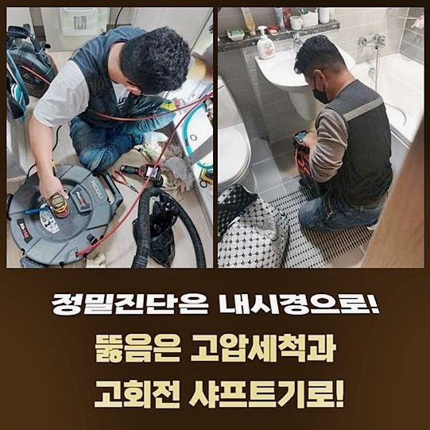
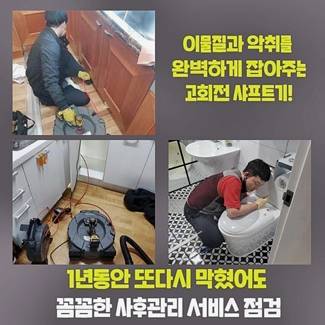
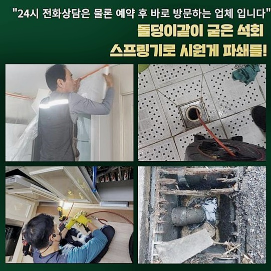
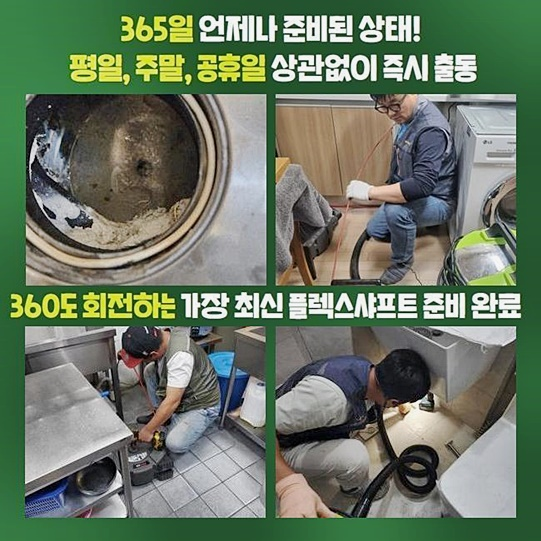
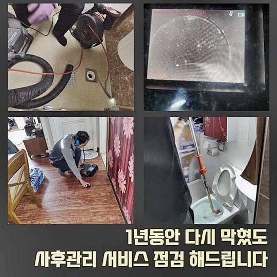
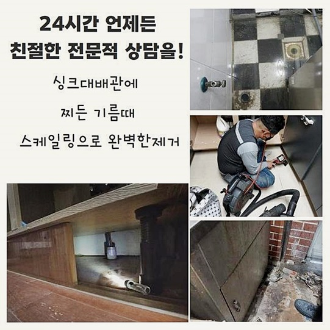
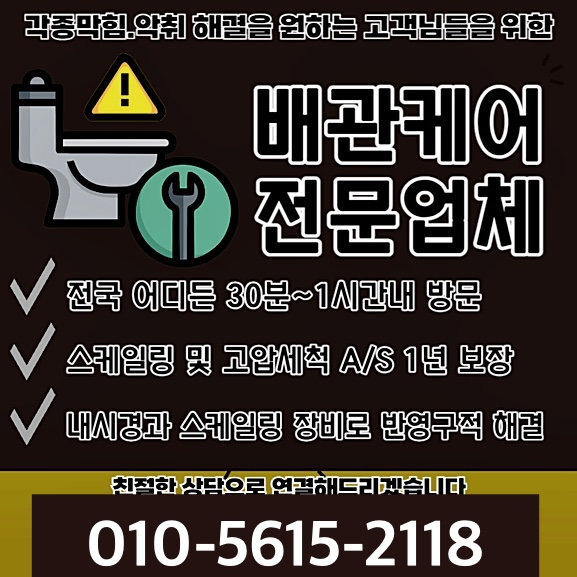

🏠 일산 주엽동싱크대막힘 구산동 오수맨홀청소 배관설비공사
용인시 처인구 배관막힘 전문 시공 후기

📋 작업 개요
- 위치: 용인시 처인구, 수원시 영통구, 화성시 동탄
- 서비스 유형: 배관막힘, 고압세척, 내시경점검
- 작업 일시:
- 업체명: 하수구수사대 (010-5615-2118)
🔍 문제 상황
일산 주엽동싱크대막힘 구산동 오수맨홀청소 배관설비공사
집에서 배수관련 문제가 야기돼도 곤혹스럽지만 지속적으로 불특정다수가 이용하는 상업목적의 건물에 있어서 막혀버리는 사태가 벌어지면 안정적인 해결들이 동반되어야합니다
금일 문제들도 신속한 출장으로 해결해드렸는데요
상업시설은 일반적으로 사무공간과 일반 기업체 음식점과같이 다양한 사업체들이 밀집되어있어 배수시스템 결함이 생기게 될 시 불편 뿐만 아니라 직관적인 피해로 우리에게 다가옵니다
이와같은 불편들을 줄이도록 신속히 불편을 보이는 건축물로 방문드렸는데요
도착하고보니 내부의 화장실에서 역류증상도 목격되어 배수구를 세심히 관찰을 시작했어요
하수시스템이 자리한 장소에 구애받지않고 생길 확률이 있는 물빠짐 관련 사고는 명확한 연유의 인지가 요구되요
그저 막힌것이면 비교적 쉽게 풀어나갈 수 있겠으나 역류해버리는 문제들도 야기된거면 점검을 거쳐 문제점 파악과정이 필요하죠
이시점에서 각별히 주의할것이 성공적 작업이 이행하는 전문가들에게 부탁하는게 좋단 사실입니다
물들이 솟아오르는 증세가 야기된 경우면 준비한 내시경기기를 운용해 배수관을 관찰하여 분명하게 까닭을 제거시키는 게 우선됩니다
또한 방문드려 수행했던 작업이라함은 석션장치로 심각성을 체크해봤죠
심각한 막힌것이면 석션으로도 시정해내기가 어렵기때문에 집수라인으로 작업지 변경이 우선적으로 선행되야할 필요가 있죠

🔎 원인 분석
💡 전문가 진단: 정밀 진단 장비를 사용하여 슬러지의 고착 여부를 판명하고 타격/세척 작업을 실시했습니다.
그렇다면 메인관로로 흘러가는 연결지점에 자리를 잡으며 고차원의 시공을 실시하기도 하죠
허나 점검을 거치니 각라인이 통수오류가 생긴게 아닌것으로 판단했어요
하나의 증상이 아닌것으로 판단되면 공동관이 말썽일 여지가 높은데요
불특정 인원이 이용하는 공간이므로 여러 사안들을 제외하는게 쉽지않았죠
일부분이 아닌 공용배수관의 결함이라면 곧바로 꼼꼼한 검수 절차들이 펼쳐져야했습니다
석션장치로 잔해를 배출해주어 배관 간 접촉된 지점들의 문제들을 확인했습니다
안내한것처럼 이어진 위치에 잔해물이 축적되어 증상이 발생되었을 가능성이 있기때문이죠
허나 여전히 꿈쩍을 않던 모습이기에 내시경카메라를 운용하여 하수관을 확인했죠
내시경기기는 지금처럼 배수에 문제들이 발발했을경우 있어야하는 기기입니다
기름성분이 존재하는 관로일때는 주거지와 요식업체 장소를 막론하고 가용합니다
의료적 내시경기계를 생각하면 조금더 어렵지 않게 아실수 있어요
앞코에 달려있는 렌즈부로 바깥부분에서 구석구석 보면서 증상이 발생된 이유를 찾을 수 있습니다
하수시스템 오류가 야기된 탓에 사전 준비없이 대강 문의하시면 무작정 시공에 착수하며 작업에 대한 과정을 안내를 제때 해주지않고서 금액지불까지 해버리는 불상사가 있을지도 몰라요

🔧 작업 과정
그러므로 금일 작업내용들을 참고하시어 어떠한 국면에 어느 기기를 운용해야되는지 조금은 알고있는게 좋은 점이 많으실거에요
전문이 되는 기계를 쓰시거나 냅다 애먼곳부터 작업들을 진행시키는 전문가를 걸러낼 수 있어요
내시경의 머리쪽을 가로막는 흡착물이 구간별로 심각한 양상을 띄고있던걸 보았기에 샤프트기를 삽입시켜 증상이 심한 곳에 세척이 속행되어야 했어요
관로가 기능장애를 보이는 사례는 한가지로 특정할 수 없는데 해당 현장에서처럼 전체배수로가 막힌것이면 셀프조치론 해결하는게 힘들죠
안일한 생각으로 해결되기를 바라는것보단 신속히 목격하자마자 바로잡을 생각으로 부유물들을 잠재우는 전문인의 서비시들을 거치시는 것이 나중 상황까지 막아낼 수 있겠습니다
샤프트장치는 끝부분에 잔해를 타격하는 체인들이 연결되어 있어요
체인들은 작동하게되면 원운동을 하게되며 잔재를 타격한다거나 뒤엉키게하여 밖으로 빼줍니다
하수구 뚫는 과정들은 도로에서나 공장같은 현장등에서 대부분 실시되는 절차입니다
이 작업이라함은 안에서부터 야기된 잔해물과 쓰레기들을 제거시켜 배수기능들을 높여주고 위생에도 긍정적인 면이 있어요
이같은 작업이라함은 전문진들이 진행하고 국가소유 설비나 중심 집수라인 쪽에 설치된 하수구의 경우에는 철저한 점검을 거쳐 작업해야합니다
안정적인 수리로 재발을 줄이면서 악취와 같은 피해들을 피할 수 있는데요
저희전문진의 경우엔 시공해줄땐 내시경장비를 사용해 이상있는 스팟을 다시 관찰해주고 청결하게 진단하는 절차로서 신속그러나 제대로 시공하죠
그러므로 배수가 안되는 사태가 나타났을때 어떠한 전문가를 결정하는게 최선일지 심사숙고해보세요!
첫째 신속한 내방 두번째 자가적 관리법 안내 3번 적절한 장비운용
일단 이러한 사항들만 체크해도 금액을 아끼며 조금더 빠른 청소가 가능해요
작업 중간중간 하수관을 확인해주며 잔해를 없애주었는데요
수리가 일단락 되었다면 어지러워진 현장을 정리해줄 차례에요
해당 과정에서 관찰해줘야 되는건 정리를 어떤식으로 진행하느냐와 연관한 사항입니다
각 라인을 청결하게 청고해주고 부속품도 잘 챙겨주어야 하므로 해당 절차도 꼼꼼하게 이어갔습니다
저희로 말씀드리면 결과물을 확인하시면 느끼시겠지만 전문가스러운 해결력을 느끼시게되고 재발하지 않도록 작업해요


✅ 작업 완료
이와같은 자신감으로 동일 증세가 생겨나 문의하면 일년이라는 시간동안 무료로 수리해드립니다
하지만 고객의 과실사안이 없게 신경쓰셔서 예방들을 해주셔야 합니다
배수구로 빠져나갈법한 잔해가라던가 기름들은 신경쓰셔서 피해서 가능하면 수도자체만 흐르게끔 거름망들을 유지하고 보수하는것에 주의를 기울여주세요
저희전문진의 사후관리 제공은 걱정하실 필요 없습니다
오늘도 제대로 작업을 수행하고 깔끔히 마쳐준 장소였습니다
작업에 있어서 고객분에게 면밀한 내용전달로 진행과정들을 설명하니 빠른 고민해소를 바란다면 저희에게 불편을 토로해보세요!




⚠️ 하수구 배관 막힘 예방 및 관리 가이드
- ✅ 머리카락, 비닐, 물티슈 등 물에 분해되지 않는 이물질은 절대 흘려보내지 마세요.
- ✅ 기름기 많은 식기는 설거지 전 키친타올로 먼저 기름때를 닦아내세요.
- ✅ 주기적으로 배수구에 뜨거운 물을 가득 부어주어 유지방 고착을 방지하세요.
- ✅ 작업 후 1년 이내 재발 시 무상 A/S 보증 서비스를 제공합니다.
💡 핵심 정리
- 확실한 장비 작업(내시경 점검 및 샤프트 스케일링)으로 원인을 뿌리 뽑습니다.
- 작업 후 1년 이내에 동일한 부위 재발 시 100% 무상 A/S 서비스를 보장합니다.
- 서울 · 경기 · 인천 전 지역에 24시간 언제든 긴급 출동할 수 있도록 항시 대기 중입니다.
❓ 자주 묻는 질문 (FAQ)
🚨 용인시 처인구 배관막힘 문제로 고민이신가요?
정확한 원인 진단과 확실한 시공으로 재발 없는 해결을 약속드립니다.
24시간 긴급 출동 | 서울 · 경기 · 인천 전지역 | 1년 내 재발 시 무상 A/S